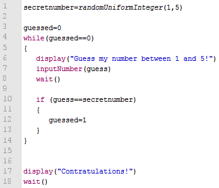

if(expression) { ... }
For more complex experiments we need the possibility to condition execution
of some parts of the program on an expression or execute it repeatedly.
Executes the code in brackets only if the expression is met.
Parameters
| expression | The expression which must be fulfilled. |
Note that each bracket needs to be in a single line of code.
See also
while,
for
Examples
Simple examples
Guessing game
|

|

|